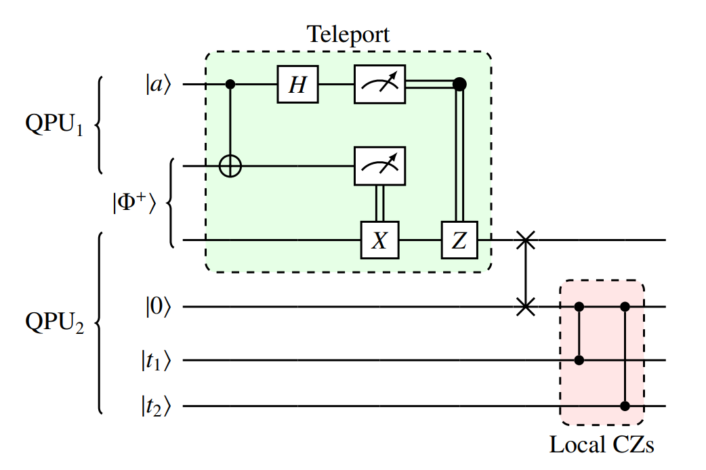
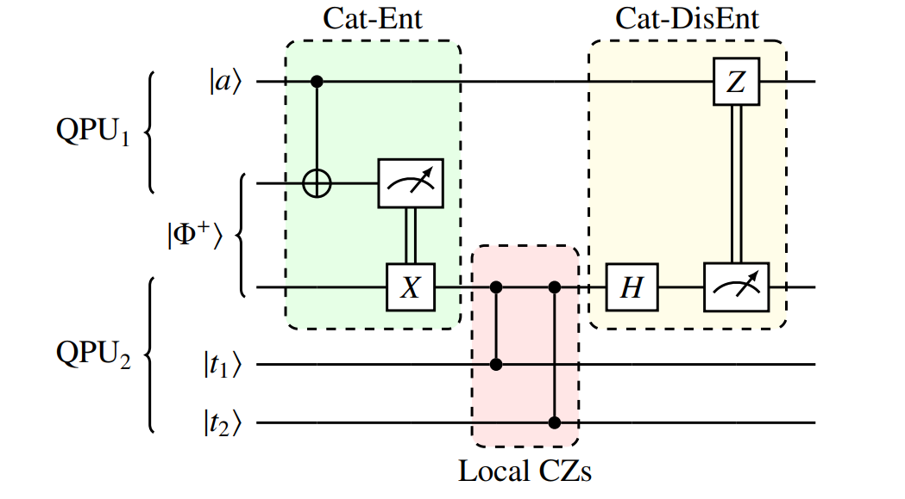

cunqa.circuit.CunqaCircuit
- class cunqa.circuit.CunqaCircuit(num_qubits: int, num_clbits: int | None = None, id: str | None = None)
Bases:
objectClass to define a quantum circuit for the
cunqaapi.This class serves as a tool for the user to describe not only simple circuits, but also to describe classical and quantum operations between circuits. On its initialization, it takes as mandatory the number of qubits for the circuit num_qubits), also number of classical bits (num_clbits) and a personalized id (id), which by default would be randomly generated. Once the object is created, class methods canbe used to add instructions to the circuit such as single-qubit and two-qubits gates, measurements, conditional operations,… but also operations that allow to send measurement outcomes or qubits to other circuits. This sending operations require that the virtual QPUs to which the circuits are sent support classical or quantum communications with the desired connectivity.
Supported operations
Single-qubit gates:
id(),x(),y(),z(),h(),s(),sdg(),sx(),sxdg(),t(),tdg(),u1(),u2(),u3(),u(),p(),r(),rx(),ry(),rz().Two-qubits gates:
swap(),cx(),cy(),cz(),csx(),cp(),cu(),cu1(),cu3(),rxx(),ryy(),rzz(),rzx(),crx(),cry(),crz(),ecr(),Three-qubits gates:
ccx(),ccy(),ccz(),cswap().n-qubits gates:
unitary().Non-unitary local operations:
c_if(),measure(),measure_all(),reset().Remote operations for classical communications:
measure_and_send(),remote_c_if().Remote operations for quantum comminications:
qsend(),qrecv(),expose(),rcontrol().Creating your first CunqaCircuit
Start by instantiating the class providing the desired number of qubits:
>>> circuit = CunqaCircuit(2)
Then, gates can be added through the mentioned methods. Let’s add a Hadamard gate and CNOT gates to create a Bell state:
>>> circuit.h(0) # adding hadamard to qubit 0 >>> circuit.cx(0,1)
Finally, qubits are measured by:
>>> circuit.measure_all()
Once the circuit is ready, it is ready to be sent to a QPU by the method
run().Other methods to manupulate the class are:
Method
Class method to add operations to the circuit from a list of dict-type instructions.
Plugs values into the intructions of parametric gates marked with a parameter name.
Classical communications among circuits
The strong part of
CunqaCircuitis that it allows to define communication directives between circuits. We can define the sending of a classical bit from one circuit to another by:>>> circuit_1 = CunqaCircuit(2) >>> circuit_2 = CunqaCircuit(2) >>> circuit_1.h(0) >>> circuit_1.measure_and_send(0, circuit_2) # qubit 0 is measured and the outcome is sent to circuit_2 >>> circuit_2.remote_c_if("x", 0, circuit_1) # the outcome is recived to perform a classicaly controlled operation >>> circuit_1.measure_all() >>> circuit_2.measure_all()
Then, circuits can be sent to QPUs that support classical communications using the
run_distributed()function.Circuits can also be referend to through their id string. When a CunqaCircuit is created, by default a random id is assigned, but it can also be personalized:
>>> circuit_1 = CunqaCircuit(2, id = "1") >>> circuit_2 = CunqaCircuit(2, id = "2") >>> circuit_1.h(0) >>> circuit_1.measure_and_send(0, "2") # qubit 0 is measured and the outcome is sent to circuit_2 >>> circuit_2.remote_c_if("x", 0, "1") # the outcome is recived to perform a classicaly controlled operation >>> circuit_1.measure_all() >>> circuit_2.measure_all()
Teledata protocol
The teledata protocol consists on the reconstruction of an unknown quantum state of a given physical system at a different location without actually transmitting the system [#]_. Within
cunqa, when quantum communications among the virtual QPUs utilized are available, a qubit from one circuit can be sent to another, the teledata protocol is implemented at a lower level so there is no need for the user to implement it. In this scheme, generally an acilla qubit would be neccesary to recieve the quantum state. Let’s see an example for the creation of a Bell pair remotely:>>> circuit_1 = CunqaCircuit(2, 1, id = "1") >>> circuit_2 = CunqaCircuit(2, 2, id = "2") >>> >>> circuit_1.h(0); circuit_1.cx(0,1) >>> circuit_1.qsend(1, "1") # sending qubit 1 to circuit with id "2" >>> circuit_1.measure(0,0) >>> >>> circuit_2.qrecv(0, "2") # reciving qubit from circuit with id "1" and assigning it to qubit 0 >>> circuit_2.cx(0,1) >>> circuit_2.measure_all()
It is important to note that the qubit used for the communication, the one send, after the operation it is reset, so in a general basis it wouldn’t need to be measured. If we want to send more qubits afer, we can use it since it is reset to zero.
Telegate protocol
Quantum gate teleportation, also known as telegate, reduces the topological requirements by substituting two-qubit gates with other cost-effective resources: auxiliary entangled states, local measurements, and single-qubit operations [#]_. This is another feature available in
cunqain the quantum communications scheme, managed by theControlContextclass. Here is an example analogous to the one presented above:>>> circuit_1 = CunqaCircuit(2, id = "1") >>> circuit_2 = CunqaCircuit(1, id = "2") >>> >>> circuit_1.h(0); circuit_1.cx(0,1) >>> >>> with circuit_1.expose(1, circuit_2) as rcontrol: # exposing qubit at circuit_1 >>> circuit_2.cx(rcontol, 1) # applying telegate operation controlled by the exposed qubit >>> >>> circuit_1.measure_all() >>> circuit_2.measure_all()
Here there is no need for an ancilla since the control is the exposed qubit from the other circuit/virtual QPU.
Warning
Note that the circuit specification in
CunqaCircuit.expose()cannot be done by passing the circuitCunqaCircuit.idsince theControlContextobject needs theCunqaCircuitobject in order to manage the telegate block.References:
[#] Review of Distributed Quantum Computing. From single QPU to High Performance Quantum Computing
{kind=link}
{kind=link}
Attributes
|
Information about the main class attributes given as a dictinary. |
|
Number of classical bits of the circuit. |
|
Number of qubits of the circuit. |
|
Weather the circuit contains parametric gates. |
|
Weather the circuit contains classical communications with other circuit. |
|
Weather the circuit contains quantum communications with other circuit. |
|
Weather the circuit has local non-unitary operations. |
|
Set of operations applied to the circuit. |
|
Dictionary of quantum registers as |
|
Dictionary of classical registers of the circuit as |
|
List of circuit ids to which the current circuit is sending measurement outcomes or qubits. |
|
List of the parameters that the circuit currently has |
|
List of labels assigned to parametric gates to be able to update them separately and conveniently. |
Methods
- CunqaCircuit.__init__(num_qubits: int, num_clbits: int | None = None, id: str | None = None)
Class constructor to create a CunqaCirucit. Only the
num_qubitsargument is mandatory, alsonum_clbitscan be provided if there is intention to incorporate intermediate measurements. If noidis provided, one is generated randomly, then it can be accessed through the class attribute_id.- Parameters:
num_qubits (
int) – Number of qubits of the circuit.num_clbits (
int) – Numeber of classical bits for the circuit. A classical register is initially added.id (
str) – Label for identifying the circuit. This id is then used for refering to the circuit in classical and quantum communications methods.
- CunqaCircuit.assign_parameters(**marked_params)
Plugs values into the intructions of parametric gates marked with a parameter name.
- Parameters:
marked_parameters (
dict) – values for each set of marked parameters
- CunqaCircuit.c_if(gate: str, control_qubit: int, target_qubit: int, param: float | None = None, matrix: list[list[list[complex]]] | None = None) None
Method for implementing a gate contiioned to a classical measurement. The control qubit provided is measured, if it’s 1 the gate provided is applied to the given qubits.
For parametric gates, only one-parameter gates are supported, therefore only one parameter must be passed.
The gates supported by the method are the following: h, x, y, z, rx, ry, rz, cx, cy, cz, unitary.
To implement the conditioned uniraty gate, the corresponding matrix should be passed by the matrix argument.
- Parameters:
gate (
str) – gate to be applied. Has to be supported by CunqaCircuit.control_qubit (
int) – control qubit whose classical measurement will control the execution of the gate.target_qubit (
int|list[int]) – list of qubits or qubit to which the gate is intended to be applied.param (
float|int) – parameter for the case parametric gate is provided.matrix (
list|numpy.ndarray) – unitary operator in matrix form to be applied to the given qubits.
- CunqaCircuit.ccx(*qubits: int) None
Class method to apply ccx gate to the given qubits.
- Parameters:
qubits (
int) – qubits in which the gate is applied, first two will be control qubits and the following one will be target qubit.
- CunqaCircuit.ccy(*qubits: int) None
Class method to apply ccy gate to the given qubits.
- Parameters:
qubits (
int) – qubits in which the gate is applied, first two will be control qubits and the following one will be target qubit.
- CunqaCircuit.ccz(*qubits: int) None
Class method to apply ccz gate to the given qubits.
- Parameters:
qubits (
int) – qubits in which the gate is applied, first two will be control qubits and the following one will be target qubit.
- CunqaCircuit.cp(param: float | int | str, *qubits: int) None
Class method to apply cp gate to the given qubits.
- Parameters:
param (
float|int) – parameter for the parametric gate.qubits (
int) – qubits in which the gate is applied, first one will be the control qubit and second one the target qubit.
- CunqaCircuit.crx(param: float | int | str, *qubits: int) None
Class method to apply crx gate to the given qubits.
- Parameters:
param (
float|int) – parameter for the parametric gate.qubits (
int) – qubits in which the gate is applied, first one will be the control qubit and second one the target qubit.
- CunqaCircuit.cry(param: float | int | str, *qubits: int) None
Class method to apply cry gate to the given qubits.
- Parameters:
param (
float|int) – parameter for the parametric gate.qubits (
int) – qubits in which the gate is applied, first one will be the control qubit and second one the target qubit.
- CunqaCircuit.crz(param: float | int | str, *qubits: int) None
Class method to apply crz gate to the given qubits.
- Parameters:
param (
float|int) – parameter for the parametric gate.qubits (
int) – qubits in which the gate is applied, first one will be the control qubit and second one the target qubit.
- CunqaCircuit.cswap(*qubits: int) None
Class method to apply cswap gate to the given qubits.
- Parameters:
qubits (
int) – qubits in which the gate is applied, first two will be control qubits and the following one will be target qubit.
- CunqaCircuit.csx(*qubits: int) None
Class method to apply csx gate to the given qubits.
- Parameters:
qubits (
int) – qubits in which the gate is applied, first one will be control qubit and second one target qubit.
- CunqaCircuit.cu(theta: float | int | str, phi: float | int | str, lam: float | int | str, gamma: float | int | str, *qubits: int) None
Class method to apply cu gate to the given qubits.
- Parameters:
theta (
float|int) – angle.phi (
float|int) – angle.lam (
float|int) – angle.gamma (
float|int) – angle.qubits (
int|list[int]) – qubits in which the gate is applied, first one will be the control qubit and second one the target qubit.
- CunqaCircuit.cu1(param: float | int | str, *qubits: int) None
Class method to apply cu1 gate to the given qubits.
- Parameters:
param (
float|int) – parameter for the parametric gate.qubits (
int) – qubits in which the gate is applied, first one will be the control qubit and second one the target qubit.
- CunqaCircuit.cu3(theta: float | int | str, phi: float | int | str, lam: float | int | str, *qubits: int) None
Class method to apply cu3 gate to the given qubits.
- Parameters:
theta (
float|int) – angle.phi (
float|int) – angle.lam (
float|int) – angle.qubits (
int) – qubits in which the gate is applied, first one will be the control qubit and second one the target qubit.
- CunqaCircuit.cx(*qubits: int) None
Class method to apply cx gate to the given qubits.
- Parameters:
qubits (
int) – qubits in which the gate is applied, first one will be control qubit and second one target qubit.
- CunqaCircuit.cy(*qubits: int) None
Class method to apply cy gate to the given qubits.
- Parameters:
qubits (
int) – qubits in which the gate is applied, first one will be control qubit and second one target qubit.
- CunqaCircuit.cz(*qubits: int) None
Class method to apply cz gate to the given qubits.
- Parameters:
qubits (
int) – qubits in which the gate is applied, first one will be control qubit and second one target qubit.
- CunqaCircuit.ecr(*qubits: int) None
Class method to apply ecr gate to the given qubits.
- Parameters:
qubits (
int) – qubits in which the gate is applied.
- CunqaCircuit.expose(qubit: int, target_circuit: str | CunqaCircuit) ControlContext
Class method to expose a qubit from the current circuit to another one for a telegate operation. The exposed qubit will be used at the target circuit as the control qubit in controlled operations.
- Parameters:
qubit (
int) – qubit to be exposed.target_circuit (
str|CunqaCircuit) – id of the circuit or circuit where the exposed qubit is used.
- Returns:
A
ControlContextobject to manage remotly controlled operations in the given circuit.
Warning
In the current version,
expose()instruction is only supported for MQT DDSIM (Munich) simulator. If circuits with such instructions are sent to other simulators, an error will occur at the virtual QPU.
- CunqaCircuit.from_instructions(instructions: list[dict])
Class method to add operations to the circuit from a list of dict-type instructions.
Each instruction must have as mandatory keys
"name"and"qubits", while other keys are accepted:"clbits","params","circuits"or"remote_conditional_reg".- Parameters:
instructions (
list[dict]) – list gathering all the each instruction as a dict.
- CunqaCircuit.h(qubit: int) None
Class method to apply h gate to the given qubit.
- Parameters:
qubit (
int) – qubit in which the gate is applied.
- CunqaCircuit.id(qubit: int) None
Class method to apply id gate to the given qubit.
- Parameters:
qubit (
int) – qubit in which the gate is applied.
- CunqaCircuit.measure(qubits: int | list[int], clbits: int | list[int]) None
Class method to add a measurement of a qubit or a list of qubits and to register that measurement in the given classical bits.
- Parameters:
qubits (
int|list[int]) – qubits to measure.clbits (
int|list[int]) – clasical bits where the measurement will be registered.
- CunqaCircuit.measure_all() None
Class to apply a global measurement of all of the qubits of the circuit. An additional classcial register will be added and labeled as “measure”.
- CunqaCircuit.measure_and_send(qubit: int, target_circuit: str | CunqaCircuit) None
Class method to measure and send a bit from the current circuit to a remote one.
- Parameters:
qubit (
int) – qubit to be measured and sent.target_circuit (
str|CunqaCircuit) – id of the circuit or circuit to which the result of the measurement is sent.
- CunqaCircuit.multicontrol(base_gate: str, num_ctrl_qubits: int, qubits: list[int], params: list[float, int, Parameter] = [])
Class method to apply a multicontrolled gate to the given qubits.
- Parameters:
base_gate (
str) – name of the gate to convert to multicontrolled.num_ctrl_qubits (
int) – number of qubits that control the gate.qubits (
list[int]) – qubits in which the gate is applied, first num_ctrl_qubits will be the control qubits and the remaining the target qubits.params (
list[float|int|Parameter]) – list of parameters for the gate.
Warning
This instructions is currently only running with AER.
- CunqaCircuit.p(param: float | int | str, qubit: int) None
Class method to apply p gate to the given qubit.
- Parameters:
param (
float|int) – parameter for the parametric gate.qubit (
int) – qubit in which the gate is applied.
- CunqaCircuit.qrecv(qubit: int, control_circuit: str | CunqaCircuit) None
Class method to send a qubit from the current circuit to a remote one.
- Parameters:
qubit (
int) – ancilla to which the received qubit is assigned.control_circuit (
str|CunqaCircuit) – id of the circuit from which the qubit is received.
- CunqaCircuit.qsend(qubit: int, target_circuit: str | CunqaCircuit) None
Class method to send a qubit from the current circuit to another one.
- Parameters:
qubit (
int) – qubit to be sent.target_circuit (
str|CunqaCircuit) – id of the circuit or circuit to which the qubit is sent.
- CunqaCircuit.r(theta: float | int | str, phi: float | int | str, qubit: int) None
Class method to apply r gate to the given qubit.
- Parameters:
theta (
float|int) – angle.phi (
float|int) – angle.qubit (
int) – qubit in which the gate is applied.
- CunqaCircuit.remote_c_if(gate: str, qubits: int | list[int], control_circuit: str | CunqaCircuit, param: float | None = None, matrix: list[list[list[complex]]] | None = None, num_ctrl_qubits: int | None = None) None
Class method to apply a distributed instruction as a gate condioned by a non local classical measurement from a remote circuit and applied locally.
The gates supported by the method are the following: h, x, y, z, rx, ry, rz, cx, cy, cz, unitary.
To implement the conditioned uniraty gate, the corresponding matrix should be passed by the param argument.
- Parameters:
gate (
str) – gate to be applied. Has to be supported by CunqaCircuit.target_qubits (
int|list[int]) – qubit or qubits to which the gate is conditionally applied.param (
float|int) – parameter in case the gate provided is parametric.control_circuit (
str|CunqaCircuit) – id of the circuit or circuit from which the condition is sent.
- CunqaCircuit.reset(qubits: int | list)
Class method to add reset instruction to a qubit or list of qubits.
- Parameters:
qubits (
int) – qubits to which the reset operation is applied.
- CunqaCircuit.rx(param: float | int | str, qubit: int) None
Class method to apply rx gate to the given qubit.
- Parameters:
param (
float|int) – parameter for the parametric gate.qubit (
int) – qubit in which the gate is applied.
- CunqaCircuit.rxx(param: float | int | str, *qubits: int) None
Class method to apply rxx gate to the given qubits.
- Parameters:
param (
float|int) – parameter for the parametric gate.qubits (
int) – qubits in which the gate is applied.
- CunqaCircuit.ry(param: float | int | str, qubit: int) None
Class method to apply ry gate to the given qubit.
- Parameters:
param (
float|int) – parameter for the parametric gate.qubit (
int) – qubit in which the gate is applied.
- CunqaCircuit.ryy(param: float | int | str, *qubits: int) None
Class method to apply ryy gate to the given qubits.
- Parameters:
param (
float|int) – parameter for the parametric gate.qubits (
int) – qubits in which the gate is applied.
- CunqaCircuit.rz(param: float | int | str, qubit: int) None
Class method to apply rz gate to the given qubit.
- Parameters:
param (
float|int) – parameter for the parametric gate.qubit (
int) – qubit in which the gate is applied.
- CunqaCircuit.rzx(param: float | int | str, *qubits: int) None
Class method to apply rzx gate to the given qubits.
- Parameters:
param (
float|int) – parameter for the parametric gate.qubits (
int) – qubits in which the gate is applied.
- CunqaCircuit.rzz(param: float | int | str, *qubits: int) None
Class method to apply rzz gate to the given qubits.
- Parameters:
param (
float|int) – parameter for the parametric gate.qubits (
int) – qubits in which the gate is applied.
- CunqaCircuit.s(qubit: int) None
Class method to apply s gate to the given qubit.
- Parameters:
qubit (
int) – qubit in which the gate is applied.
- CunqaCircuit.sdg(qubit: int) None
Class method to apply sdg gate to the given qubit.
- Parameters:
qubit (
int) – qubit in which the gate is applied.
- CunqaCircuit.swap(*qubits: int) None
Class method to apply swap gate to the given qubits.
- Parameters:
qubits (
list[int]) – qubits in which the gate is applied.
- CunqaCircuit.sx(qubit: int) None
Class method to apply sx gate to the given qubit.
- Parameters:
qubit (
int) – qubit in which the gate is applied.
- CunqaCircuit.sxdg(qubit: int) None
Class method to apply sxdg gate to the given qubit.
- Parameters:
qubit (
int) – qubit in which the gate is applied.
- CunqaCircuit.t(qubit: int) None
Class method to apply t gate to the given qubit.
- Parameters:
qubit (
int) – qubit in which the gate is applied.
- CunqaCircuit.tdg(qubit: int) None
Class method to apply tdg gate to the given qubit.
- Parameters:
qubit (
int) – qubit in which the gate is applied.
- CunqaCircuit.u(theta: float | int | str, phi: float | int | str, lam: float | int | str, qubit: int) None
Class method to apply u gate to the given qubit.
- Parameters:
theta (
float|int) – angle.phi (
float|int) – angle.lam (
float|int) – angle.qubit (
int) – qubit in which the gate is applied.
- CunqaCircuit.u1(param: float | int | str, qubit: int) None
Class method to apply u1 gate to the given qubit.
- Parameters:
param (
float|int|str) –parameter for the parametric gate. String identifies a variable parameter (needs to be assigned) with the string label.
qubit (int): qubit in which the gate is applied.
- CunqaCircuit.u2(theta: float | int | str, phi: float | int | str, qubit: int) None
Class method to apply u2 gate to the given qubit.
- Parameters:
theta (
float|int) – angle.phi (
float|int) – angle.qubit (
int) – qubit in which the gate is applied.
- CunqaCircuit.u3(theta: float | int | str, phi: float | int | str, lam: float | int | str, qubit: int) None
Class method to apply u3 gate to the given qubit.
- Parameters:
theta (
float|int) – angle.phi (
float|int) – angle.lam (
float|int) – angle.qubit (
int) – qubit in which the gate is applied.
- CunqaCircuit.unitary(matrix: list[list[list[complex]]], *qubits: int) None
Class method to apply a unitary gate created from an unitary matrix provided.
- Parameters:
matrix (
list|numpy.ndarray) – unitary operator in matrix form to be applied to the given qubits.qubits (
int) – qubits to which the unitary operator will be applied.
- CunqaCircuit.x(qubit: int) None
Class method to apply x gate to the given qubit.
- Parameters:
qubit (
int) – qubit in which the gate is applied.
- CunqaCircuit.y(qubit: int) None
Class method to apply y gate to the given qubit.
- Parameters:
qubit (
int) – qubit in which the gate is applied.
- CunqaCircuit.z(qubit: int) None
Class method to apply z gate to the given qubit.
- Parameters:
qubit (
int) – qubit in which the gate is applied.